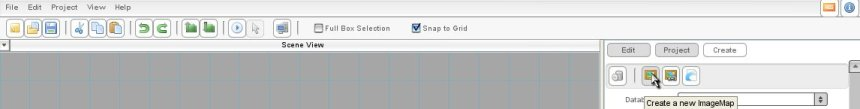
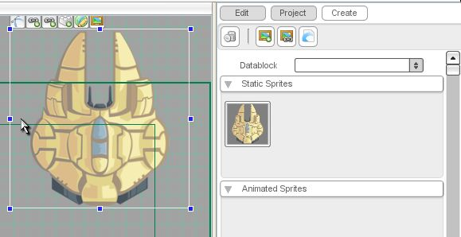
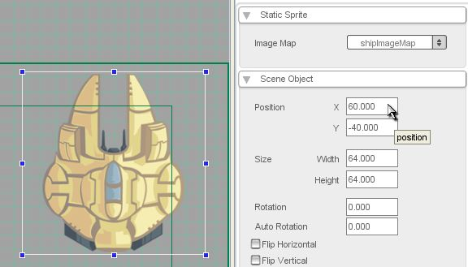
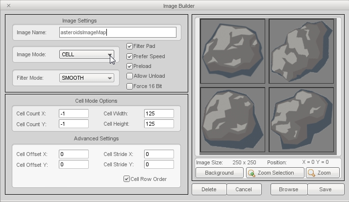
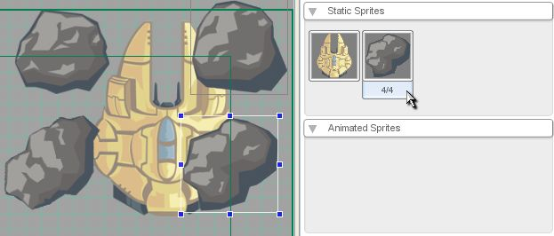

Torque 2D - Static Sprites Tutorial
In this tutorial, you'll learn how to set up and use static sprites in Torque 2D (T2D). In case you don't know what I mean when I say 'sprite', a sprite is a two-dimensional graphic image. In general, sprites can be animated or not, but a 'static' sprite is one that is not animated. Another term we'll be using a lot in this tutorial is 'image map', which refers to an image file. As far as file types go, Torque can use '.jpg' (or '.jpeg') and '.png' image maps.
To prepare for this tutorial, run Torque 2D and create a new
project by choosing New Project... from the file menu. Name the new project "Sprites" and use
the Empty Game project template. This creates
a new folder called Sprites in your user documents folder. For example, on Windows Vista or 7 it will be created in
USER_NAME/Documents/MyGames/Sprites.
We'll need to add a couple images to the Sprites project for this tutorial. When you're building your own game you'll create whatever images you need, but for now we're just going to copy a couple files from the resources supplied with T2D. Open your file browser and browse to the Torque Game Builder 1.7.5 Pro/resources/starterArt/images folder. Copy the files named ship.png and asteroids.png. Paste them into the Sprites/data/images folder. This data/images folder is the standard place for any image files used in a project, so when building your own games this is where you will put the graphics you create.
Back in Torque 2D, click the Create tab on the right side of the screen. To load one of the images that you just put into your project, click the Create a new ImageMap button under that tab (as shown in Figure 1). The Choose Your Image File dialog will appear.

Figure 1
Then browse out and locate the "ship.png" i mage file in our current project's data/images folder. Once you select the image click the Open button to bring it into the Level Builder.
Now that you've loaded your image file as a sprite, you'll see it as an option in the Static Sprites section of the Create tab. Putting it into your game couldn't be easier: just click, hold, and drag the image from the Create tab into the Scene View. When you release the mouse button, you'll see your sprite with a selection box around it, and a set of widget buttons above it (as shown in Figure 4).

Figure 4
To see your game as it would currently look, you can hit the Play Level button (looks like a little arrow pointing to the right) in the T2D taskbar. Since we haven't saved our project yet, you will be prompted to do so. Enter "Level 1" as the filename, and click Save File. You will now see what we have built so far, with the default Torque 2D background. Not too exciting, yet. When you are done, press the stop button in the Level Control box.
Now that the ship is inserted into our level, let's check out some of the properties of the sprite and how to edit them. To do this, select the ship sprite by clicking on it, then select the Edit tab on the right side of T2D (figure 5). In this tab, you will see many sections, each filled with properties of the currently selected object. You can click on the arrows to the left of the section names in order to expand or hide these properties. For now, we'll be checking out the Static Sprite and Scene Object properties, so open those sections and collapse all the other ones (as shown in Figure 5).

Figure 5
All a static sprite really consists of is an image map, so that is the only property available in the Static Sprite section. Changing the Image Map property changes the graphic of your sprite. We don't have any other image maps loaded, so let's not play with that for now.
The Scene Object section is a little more interesting. A Scene Object is the basic Torque 2D class for anything that is seen in your game, including static sprites. The properties shown in the Edit tab will cause real-time changes to the selected object, so if you change the Position X property to "60" and the Position Y property to "-40" and press Enter, the ship will move (figure 5). Go ahead and try this now. Drag the ship back towards the center. You'll see the Position properties change as you do this. We're going to go through all the Scene Object properties now. If you would like to, experiment with each one by changing it in the Edit tab and seeing what happens. If you want to use the Play Level button to see how your changes will actually look when the game is running, you must save the level first or your changes be lost!
Position (X and Y): Defines the screen location of the object. These properties can also be changed by dragging the object with the mouse.
Size (Width and Height): Defines the size of the object. These properties can also be changed by clicking and dragging the handles (small blue squares) on the selection-box that surrounds the object.
Rotation: Defines the angle of the object. You can also rotate the object by holding the alt key and dragging the object's handles.
Auto Rotation: Defines the object's in-game rotation in degrees per second. You can only see the effects of this when your game is actually running.
Flip Horizontal: Flips the object's image from left-to-right.
Flip Vertical: Flips the object's image from top-to-bottom.
Layer: Defines the object's screen layer. Higher numbers are further from the camera. For example, if you had a graphic of the ground under your ship, you'd want to set the ground's layer to a higher number than the ship. To see this in action, you can create another ship overlapping the first and increase its layer number.
Group: Defines the object's game group. This can be used to group the various objects in your game, especially for working with collisions. For example, you might want a 'player' group, an 'enemy' group, and a 'power-up' group. This is a somewhat advanced property, so don't worry if you don't totally grasp it.
Forward/Back: These buttons move an object up and down within its layer. This is similar to the Layer property, but only affects the draw order of objects that are in the same layer.
Visible: Defines whether or not the object is visible. When this is unchecked, your object is invisible.
Lifetime: Defines how many seconds of gameplay until an object is automatically deleted from a level. A value of zero means the object will never be deleted. You can only see the effects of this when your game is actually running.
A 'cell' image map is a single image file that contains multiple pictures. An example of this is the asteroids file that you copied into the images folder at the beginning of this tutorial. Let's check it out! Go back to the Create tab, and press the Create a new Imagemap button. Choose the asteroids file, and press Open. Now the asteroids image should be in the Level Builder, the problem is it's an entire image (which is the default). We want to change the settings on this Static Sprite, so double click the asteroids image in the Object Library. The Image Builder dialog comes up (as shown in Figure 6).
You can see in the preview screen that this image has 4 different asteroids in it. What we need to do now is divide it into 4 separate 'cells'. To do this, simply change the ImageMap dropdown to CELL (figure 6). The preview now shows you the asteroids divided into separate cells. We'll talk about more of the options in this dialog in the next section. For now, just click Save.

Figure 6
You can now see one of the asteroids in the Static Sprites section of the Create tab. Under the asteroid, you can see a label that says "1/4". This means that you are currently viewing cell 1 of 4. If you click on the "1/4" label underneath the asteroid image, it will move to the next cell. You can drag the visible asteroid into your game just like you would any other static sprite. Go ahead and drag one of each asteroid type into the Scene View (as shown in Figure 7).

Figure 7
For information on building a cell mode image like this one, check out the Image Map reference.
Time to take a look back at the Image Builder. To open the Image Builder for any of your sprites, you can double-click on its image in the Create tab. We're going to use the asteroids image as an example, so double click on that. You'll see the Image Builder dialog come up with all the asteroids' current settings, just like when you originally loaded it.
Let's begin with the preview image on the right. Under it are 3 buttons: Background, Zoom Selection, and Zoom. We'll go through all of them, now. Again, feel free to experiment with each.
Background: brings up a dialog that lets you change the color of the image background and the color of the borders around each cell.
Zoom Selection: lets you zoom in on an individual cell. First click Zoom Selection, then click on the cell you want to zoom into. Click Zoom Out when done.
Zoom: lets you zoom in on the image map as a whole. First click Zoom then click the area of the image you want to zoom in on.
Under these buttons, there is another row of buttons. They work as follows:
Delete: deletes the image map from your project.
Cancel: leaves the Image Builder.
Browse: takes you to the Choose Your Image File dialog.
Save: saves your changes.
Now let's take a quick look at the Image Settings section. The Image Name is the name that Torque 2D will use to refer to this image. It is almost always best to use the default, which is the image filename with "ImageMap" added to the end. We have already looked at 2 of the 3 image mode choices, FULL (use the whole image) and CELL (divide the image into cells). The remaining choice in the Image Mode dropdown is KEY, which is another way to have multiple images in one file. Key mode is explained in detail in the Image Maps reference, but basically it is a way to divide your image using a background color. The Filter Mode dropdown lets you choose whether or not to smooth your image when it is sized. For an example, use Zoom Selection to zoom in on one of the asteroids, then change Filter Mode to NONE. You will see the difference very clearly if you look at the edge of the asteroid.
Adjacent to the Image Mode and Filter Mode dropdowns there are 5 checkboxes. Filter Pad is used to make sure that cell based images don't bleed into each other. You will probably want this on any time you have Image Mode set to CELL. The other 4 checkboxes, Prefer Speed, Preload, Force 16 Bit and Allow Unload, are used for memory management and are beyond the scope of this tutorial. You can read about these properties in the Image Maps reference.
The final section in the Image Builder is the Cell Mode Options. These properties define how Torque 2D divides up the cells of an image. They are explained in full detail in the Image Maps reference, but for now we'll just take a quick look at Cell Height and Cell Width. These two properties define the size (in pixels) of each cell. To see an example of how this works, change both the values to 62. Now there are 16 cells, each half as big as the original 4 (as shown in Figure 8).
You now know the basics of using static sprites in Torque 2D. Experimenting with what you learned here will give you a more broad understanding of how to best use static sprites in your game. If you want to know more about image maps in general, read the 'Image Maps' reference. The Torque forums and TDN will also help you find answers to any further questions you may have. Enjoy!
Page
Revision 1.2